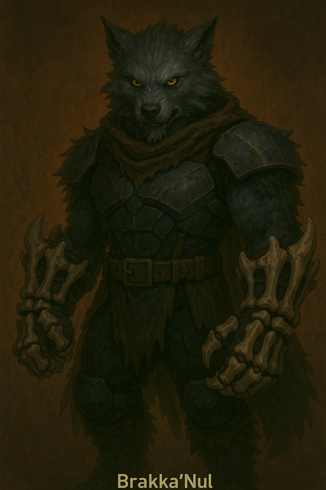

Brakka’Nul

Name & Alias: Brakka’Nul – The Pulse Eater
Age / Race / Role: Unknown / Ravixx / Energy Predator, Threat Neutralizer
Appearance: Massive creature with plated body, deep red eyes, and a swirling core in its chest. Moves with beast-like precision.
Affinities & Energy Types: Adaptive Energy, Consumption
Threat Tier: S+/SS-Rank
Core Stats (0–10):
• Power: 10
• Speed: 7
• Technique: 8
• Intelligence: 6
• Defense: 9
• Aura Control: Variable
Signature Abilities:
• Pulse Drain
• Energy Maw Lunge
• Core Overload Burst
• Adaptive Echo Shift
• Predator Lockdown
Personality Summary: Instinctive and primal, yet eerily perceptive. Tracks threats by energy signature and neutralizes efficiently.
Faction or Allegiances: The Vigilant Watchers